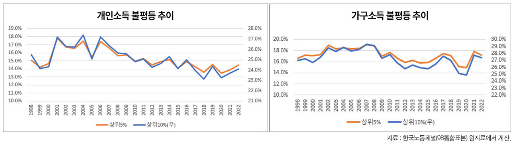

박영삼의 통계로 보는 노동
고소득 가구 취업률 높고 가구원 소득 수준도 다양
저소득층은 나홀로 가구 비율 높아 … 가구·개인소득 분포 차이 감안해 정책 수립해야
한 사회의 가구소득 소득분배 상태는 다양한 조건으로부터 영향을 받는다. 시장에서의 자본과 노동 간의 노동소득 분배, 정부의 조세와 복지 등 재분배 정책이 큰 영향을 미친다. 그렇지만 다른 조건들이 동일하다면, 개인 간 소득불평등이 개선될 경우 가구 간 소득격차도 대체로 완화되는 방향으로 변화하는 것이 일반적이다.
그런데 최근 들어 개인 간 소득분배와 가구 간 소득분배가 서로 다른 방향으로 움직이는 현상이 자주 확인되고 있다. 주된 요인으로 동류혼의 증가와 가구 간 취업률 격차 확대 등 이른바 가구의 ’구성 효과’가 주된 요인으로 작용하는 것으로 지목되고 있다.
과거에는 고소득 가구의 경우 홑벌이 비율이 높고 저소득 가구에서는 맞벌이나 자녀 가구원의 취업 비율이 높아 가구주의 소득격차를 가구 차원에서 보완하는 효과가 나타났다. 그런데 최근에는 반대 양상이 나타나고 있다. 소득이 높은 개인끼리 결혼을 하고 맞벌이 상태도 계속 유지하는 반면, 소득이 낮을 경우 결혼을 통한 가족형성도 쉽지 않아 저소득 1인 가구 상태에 머무르는 비율이 높아지게 되는 것이다. 이러한 상황에서는 취업률 증가도 고소득 가구가 주도하는 흐름이 형성돼 개인 간 소득격차보다 가구 간 소득격차가 더 크게 나타날 가능성도 있다.
자영업 소득까지 포함한 개인소득 분포
개인과 가구의 취업상태와 소득을 모두 알 수 있으면서 비임금근로 종사자의 소득정보까지 담고 있는 한국노동패널 원자료(1998~2022) 분석 결과 이 같은 상황이 실제 데이터로도 확인된다. 개인소득은 추세적으로는 불평등이 완화되는 모습을 보이고 있고 가장 최근의 지표 악화도 2017년 이전 수준으로 나빠진 것은 아니다. 하지만 가구소득은 2017~2019년 불평등 축소가 진행됐지만 코로나19 위기 발발을 전후로 크게 요동치면서 2010년대 중반 수준으로 나쁜 수치를 보이고 있다.

고소득층 가구주 소득 비중 줄고 배우자·가구원 소득 늘어
한편 고소득 가구를 중심으로 시간이 흐를수록 가구주의 소득 비중이 줄고 가구주 외의 가구원 소득 비중이 늘어나는 추세가 뚜렷하게 나타나고 있다. 균등화시장소득 기준 상위 20% 가구는 가구주 소득 비중이 1998년에는 65.5%에 달했으나 2022년에는 60.7%로 하락했다. 대신 배우자의 소득 비중이 13.9%에서 18.7%로 약 5%포인트 가까이 증가했다. 자녀의 소득 비중도 18.0%에서 19.7%로 상승했다. 반면 하위 20% 가구의 가구주 소득 비중은 1998년에는 절반을 약간 넘는 51.4% 수준으로 상위 20% 가구보다 낮았으나 2022년에는 71.4%로 늘어나 그 비중이 20%포인트나 높아진 결과를 보였다. 반면 배우자의 소득 비중은 이와 반대로 20%에서 14.4%로 하락했으며 자녀의 소득 비중도 25.5%에서 14.4%로 10%포인트나 감소했다. 배우자와 자녀의 소득 비중이 고소득층은 증가하고 저소득층은 크게 하락한 것이다.
고소득 가구와 저소득 가구의 가구원 개인소득 분포도 큰 차이를 보였다. 고소득 가구의 경우 개인소득 기준으로는 저소득에 속하는 사람의 비중이 적지 않았다. 2022년에 개인소득 하위 20%에 해당하는 가구원들의 9.5%는 가구소득 상위 20%에 속하고 있는 것으로 나타났다. 상위 20% 가구의 가구원 개인소득 분포는 5분위에 해당하는 사람이 42.2% 비중을 차지했고 4분위가 18.3%, 3분위가 20.6%, 2분위 10.8%, 1분위 8.2% 등으로 매우 다양했다. 반면에 하위 20%인 가구의 가구원들은 개인소득 분포에서도 1분위 62.0%, 2분위 21% 등으로 80% 이상이 개인과 가구 모두 저소득층에 속한 것으로 나타난다. 소득이 높은 가구의 가구원들이 훨씬 더 다양한 개인소득 분포를 보인다.
고용주의 66%, 비정규직의 33%가 상위 40% 가구 속해
고용형태 측면에서도 비정규직의 33.1%는 가구소득 4·5분위에 분포하고 있는 것으로 나타났다. 소득 상위 20% 가구의 가구원 중에는 정규직(43.5%)과 고용주(6.2%), 1인 자영업(8.0%) 비중이 높긴 했으나 기간제와 임시·파트, 특수형태고용 등의 비중도 적지 않았다.
물론 개인소득과 가구소득의 분배상황을 구분해서 살펴볼 필요가 있다는 지적은 완전히 새로운 이야기가 아니다. 그리고 소득이 낮은 개인들의 일정한 비중이 고소득 가구에 속한다고 해서 그러한 일자리나 사업을 나쁜 상태로 방치해도 좋다는 뜻은 더더욱 아니다.
그러나 다양한 시장소득 원천의 양과 질을 개선하는 데 이러한 상황을 감안할 필요가 있으며, 복지정책의 범위와 대상을 살피면서도 지나치게 가족 중심의 기준으로만 설계된 것이 있다면 이참에 재검토해 볼 필요도 있을 것이다.
고려대 노동문제연구소 노동데이터센터장 (youngsampk@gmail.com)